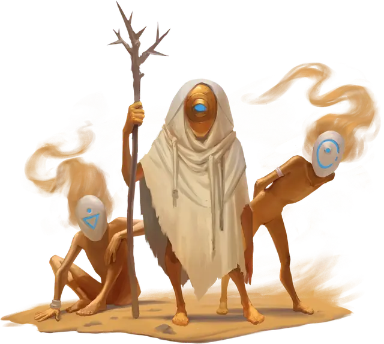

Чвинга
Chwinga
Крошечный Элементаль, нейтральный

Класс Доспеха 15
Хиты 5 (2к4)
Скорость 20 футов, плавая 20 футов, лазая 20 футов
| мод | спас | ||
|---|---|---|---|
| СИЛ | 1 | −5 | −5 |
| ЛОВ | 20 | +5 | +5 |
| ТЕЛ | 10 | +0 | +0 |
| мод | спас | ||
|---|---|---|---|
| ИНТ | 14 | +2 | +2 |
| МДР | 16 | +3 | +3 |
| ХАР | 16 | +3 | +3 |
Навыки Акробатика +7, Восприятие +7, Скрытность +7
Чувства слепое зрение 60 футов, пассивное Восприятие 17
Опасность 0
Бонус мастерства +2
Особенности
Увёртливость. . Если чвинга подвергается действию эффекта, позволяющего совершить спасбросок Ловкости, чтобы получить только половину урона, чвинга вместо этого не получает урон, если преуспеет в спасброске, и получит лишь половину урона, если провалит спасбросок.
Врождённое колдовство. . Базовой характеристикой чвинги является Мудрость. Он может неограниченно накладывать следующие заклинания, не нуждаясь в материальных или вербальных компонентах: искусство друидов [druidcraft], указание [guidance], бесследное передвижение [pass without trace], сопротивление [resistance].
Действия
Волшебный дар (1/день). . Чвинга нацеливается на Гуманоида в пределах 5 футов от себя, которого он может видеть. Цель получает сверхъестественные чары по выбору Мастера.
Более подробную информацию о сверхъестественных чарах вы можете найти в статье «Дары всех мастей» или в главе 7 «Руководства Мастера», стр. 227.
Естественное укрытие. . Чвинга волшебным образом укрывается внутри скалы, живого растения или природного источника пресной воды, находясь с ним в одном пространстве. Чвинга не может быть атакована какой-либо атакой, заклинанием или другим эффектом, пока находится внутри этого убежища, а прикрытие не ухудшает слепое зрение чвинги. Чвинга может использовать своё действие, чтобы выйти из укрытия. Если его убежище разрушено, чвинга принудительно вываливается из укрытия и появляется в пространстве, где раньше находилось укрытие, но при этом сам чвинга остаётся невредим.
Описание
Чвинга – это крошечный элементальный дух, который живёт в растениях, скалах и реках, далёких от цивилизации. Крайне застенчивые, чвинги предпочитают двигаться оставаясь незаметными.
Если два или более чвинги живут в одном и том же районе, каждый из них будет скрываться в разных растениях, скале или пресной воде. Они напоминают 6-дюймовые анимированные куклы со странными масками, прямыми конечностями и дикими волосами, но при этом два чвинга не похожи друг на друга.
Их появление иногда предвещается прохладным бризом, сладким запахом цветов и танцующими светлячками. Само их присутствие делает природную обстановку более пышной и яркой.
Гуманоидное увлечение. Чвинги избегает большинства других существ, но они находят атрибуты цивилизации увлекательными. Для них существа, которые носят доспехи, оружие, используют инструменты и готовят пищу — большая загадка. Когда чвинга сталкивается с одним или несколькими гуманоидами, его любопытство иногда завладевает им, и оно недолго следует за этими существами, чтобы наблюдать за ними. Если оно проявляет симпатию к конкретному гуманоиду, то чвинга может использовать свои заговоры, чтобы помочь ему, или даже дать волшебный подарок перед тем как уйти. Особенности, которые привлекают чвингу к определённому гуманоиду, могут различаться. В некоторых случаях чвинге может просто нравиться то, как гуманоид гуляет, или то, как он расчёсывает волосы. В других случаях оно может быть поражено способностью гуманоида играть музыку или есть обильное количество пищи.
Стихийная натура. Чвинге не нужен воздух, еда, питьё и сон. У них нет имён и нет возможности говорить. Когда чвинга умирает, он превращается в горсть цветочных лепестков, облако пыльцы, каменную статуэтку, напоминающую её прежнюю «я», гладкий каменный шарик или лужу пресной воды.